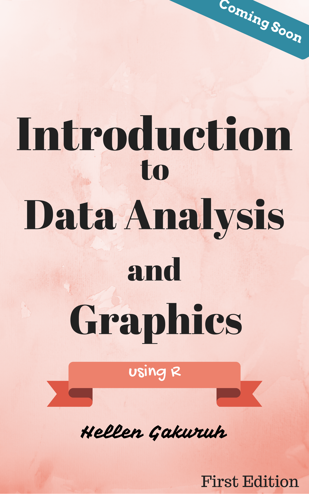

Essentials of Data Analysis and Graphics using R
Hellen Gakuruh
2017-07-14
Preface

Welcome to “Essentials of Data Analysis using R”, this is the third and core book in our learning data analysis and graphics tutorial series.
In this book we aim to get a good foundation on data analysis; that is, the essential concepts and methods in Statistics. In all our chapters, we will strive to understand the reasoning behind the calculations including assumptions made rather than memorizing formulas. In so doing we get the ability to make sound interpretation of results.
In this book, we will begin by learning how to describe data before learning how to make inferences.
Learning Outcomes
- Chapter One: Introduction
- Chapter Two: Descriptive Statistics
- Chapter Three: Exploratory Data Analysis (EDA)
- Chapter Four: Probability
- Chapter Five: Inferential Statistics
- Chapter Six: Time Series Analysis
Chapter Seven: Survival Analysis
Appendix A : Refresher Mathematics
It’s a free E-book
This book is completely free, but feel free to make any donation towards future book development.